DeepEP 通信研究学习目录
六篇专题 · 从 IBGDA 基础到 V1/V2 内核 · Markdown 与离线 HTML 双版本
本套材料把“网络怎么工作”“如何配置和验证”“项目怎样实现”连接起来。三篇基础教程解释底层概念，三篇实现文档跟读 DeepEP。每篇都有原理、流程/代码框图、源码位置、代码解释和学习建议。
HTML 阅读入口：打开学习中心。可直接用浏览器打开；页面、全文搜索、流程图和源码浏览均使用本地文件。官方外部资料仍需联网访问。
1. 六篇文档与建议顺序
| 顺序 | 文档 | 阅读后应能回答 | HTML |
|---|---|---|---|
| 01 | GPUDirect Async 与 IBGDA 原理 | 谁构造 WQE？地址怎么翻译？何时才算完成？ | 阅读 |
| 02 | CPU-assisted IBGDA 与 NVSHMEM 部署 | 三种控制面有何区别？如何核对实际路径和做实验？ | 阅读 |
| 03 | V1 SM / normal 实现 | channel、warp、ring、credit 和两级通信如何协作？ | 阅读 |
| 04 | V1 Low-Latency 实现 | 固定槽、count/flag、hook 和后台 RDMA 窗口如何实现？ | 阅读 |
| 05 | NCCL Device API 与 GIN | window/team/context 和完成语义如何映射到 V2？ | 阅读 |
| 06 | V2 Elastic 实现 | direct/hybrid、JIT、TMA、EPHandle、epilogue 如何组织？ | 阅读 |
2. 按目标选择路线

查看 Mermaid 图源码
flowchart LR
A[01 IBGDA 原理] --> B[02 CPU-assisted 与部署]
B --> C[03 V1 SM]
B --> D[04 V1 Low-Latency]
A --> E[05 NCCL Device API / GIN]
E --> F[06 V2 Elastic]
C -. 比较常驻通信 .-> F
D -. 比较低延迟调度 .-> F**第一次接触 GPU 通信：**01 → 02 → 03 → 04 → 05 → 06。先理解消息、地址和完成，再读大内核的 warp 分工。
**主要研究推理解码：**01 → 02 → 04 → 06。重点跟踪 SEND/RECV hook、固定上界、返回 handle 和真实有效 token 数；比较端到端延迟。
**主要研究训练吞吐：**01 → 03 → 05 → 06。重点看 rank 去重、分层发送、队列 credit、SM/QP 数，以及通信和 GEMM 的资源竞争。
**排查运行环境：**先读 02 的分层检查，再回到 01 确定控制面；若运行 V2，查 05 的 NCCL capability、版本和 window。
3. 知识地图
| 问题 | 主文档 | 源码定位 |
|---|---|---|
| WQE、DBR、doorbell、CQ | 01、02 | ibgda_device.cuh |
| PE 与初始化配置 | 02、03、04 | legacy.py、nvshmem.cu |
| channel/SM/warp 分工 | 03 | internode.cu |
| 固定槽、负 count、P2P | 04、01 | internode_ll.cu |
| 经典双 micro-batch 图 | 03、04 | low-latency.png |
| window/team/context | 05 | nccl.cu、handle.cuh |
| GIN flush/signal/barrier | 05、06 | comm.cuh |
| JIT、direct/hybrid、epilogue | 06 | compiler.hpp、dispatch.cuh |
| 测量与实验 | 02、各实现的研究章节 | testing.py、test_ep.py |

4. 每篇都按同一个研究方法学习
- 提问题。 例如“为什么 LL 不需要先由 CPU 得到接收数？”
- 写解释。 固定上界与 GPU count 能够分离容量和真实 token 数。
- 定位代码。 在布局、SEND 通知、RECV pack、API 输出中各找一个证据。
- 画依赖。 标记 producer、消费者、数据写入、通知、等待和复用。
- 设计反例。 0 token、同 rank 的多个 expert、极不均衡路由、跨 slot 重用。
- 做实验。 固定版本、形状和拓扑，先正确性后性能，保存原始结果。
学完的标志是能解释“哪行代码保证了什么，以及还没有保证什么”。
5. 统一术语速查
| 术语 | 读法与边界 |
|---|---|
| dispatch | token 发往 expert 所在位置，并建立反向映射 |
| combine | expert 结果回源与规约；权重语义按 API 区分 |
| SM / block | SM 是硬件，block 是调度单元；blockIdx.x 不是物理 SM id |
| rank / PE / team peer | 编号需确认所属通信域 |
| IBGDA | GPU 生成网络 work request，存在 traditional 与 CPU-assisted 模式 |
| GIN | NCCL 设备端网络接口，具体 backend 与版本另行确认 |
| capacity / count | buffer 容量与有效 token 数，不能互换 |
| source reuse / remote visibility | 源槽可重用与远端可读是两个事件 |
6. 版本与证据
三篇实现文档保留 2026-08-26 的研究基线；三篇基础教程在 2026-09-23 对照同一本地源码与官方资料撰写。实际上游源码 commit 为 01dc3aaac82068020353dce2c302e38153c0bfaa，本地教程提交与上游源码提交不同。
源码事实以代码为准；官方资料解释 API/硬件背景；性能模型与实验设计属于推导。当前 Windows 文档构建环境没有运行 GPU 集群验证。HTML 源码页是构建时快照，更新代码后应重新构建。
外部入口：IBGDA 原理、CPU-assisted、DeepEP NVSHMEM、NCCL Device API。
7. HTML 阅读与重建
HTML 包含目录与六篇完整正文，并提供必要的源码/补充材料页。左侧选篇目，右侧跳章节；全文搜索定位章节，代码可复制，流程图可打开大图，字体和明暗主题可切换，浏览器打印可保存 PDF。
修改 Markdown 后在仓库根目录运行：
node docs/tools/build-docs.cjs工具支持 DEEPEP_DOCS_NODE_MODULES 指定依赖目录；安装及验证方式见 构建说明。阅读已生成 HTML 无需 Node。分享时复制整个 docs/html/，入口是 index.html。